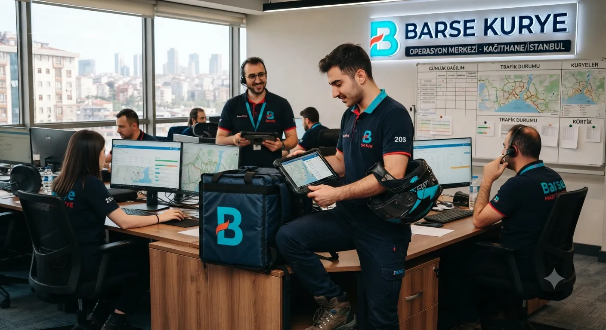
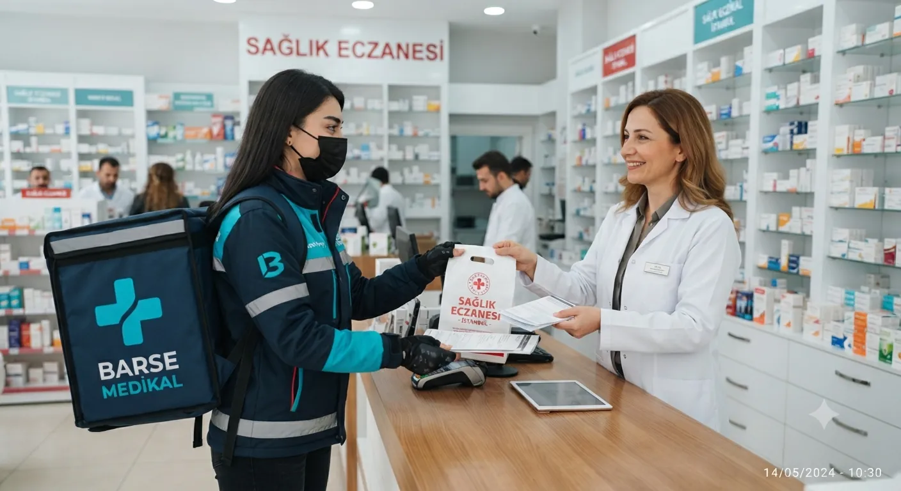
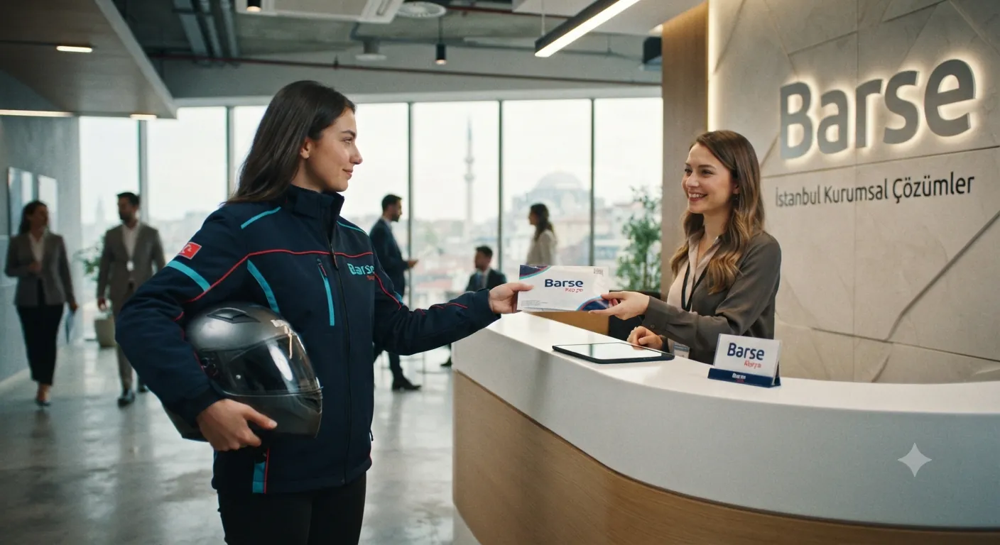
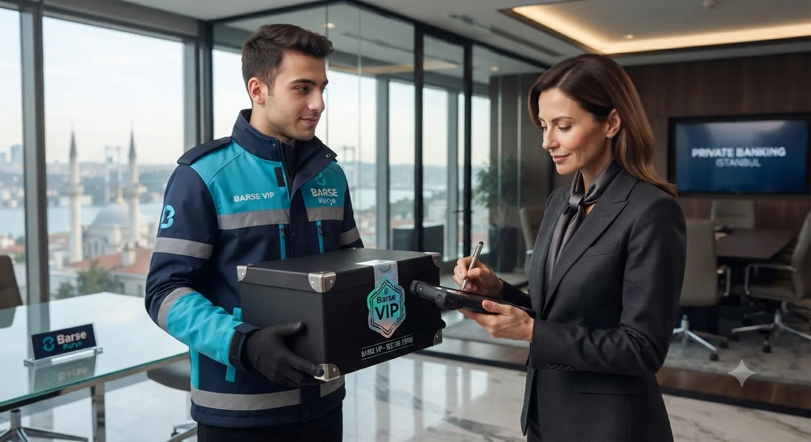
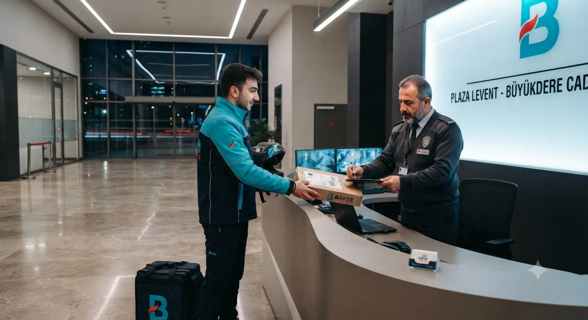
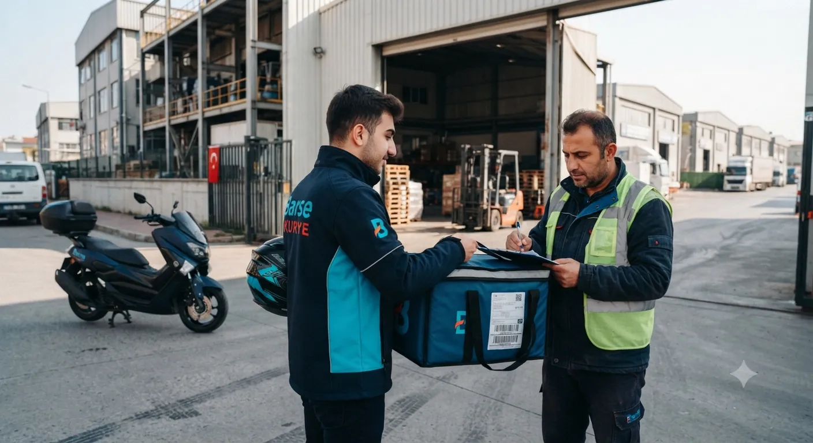
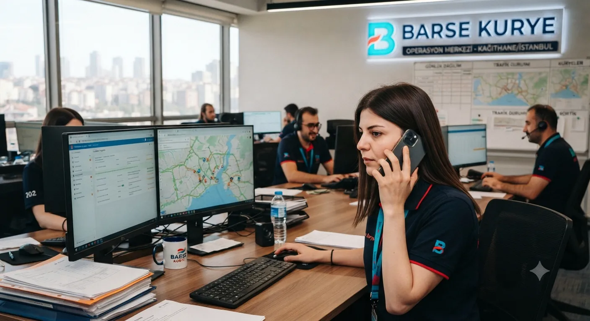
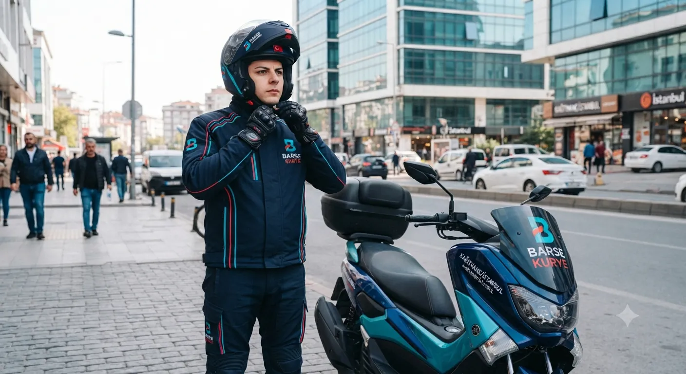
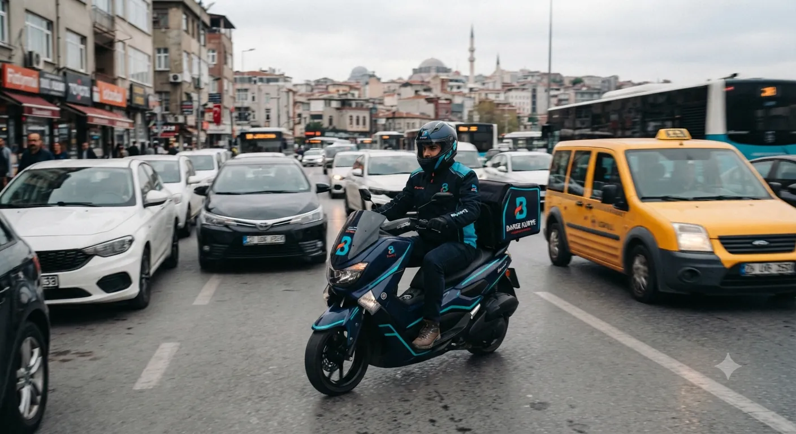
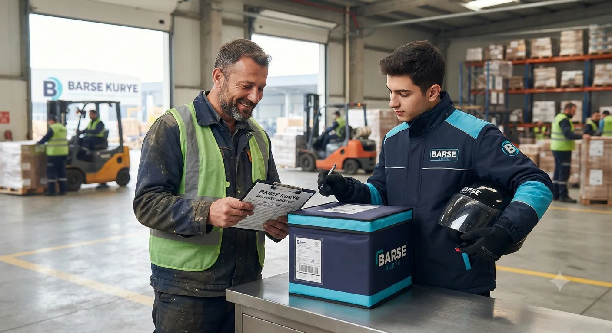

Evrak ve Dosya Kurye
Sözleşme, fatura, ihale dosyası ve resmi evrakların şehir içi aynı gün teslimi.
DetaylarŞu anda kurye alımı açık · 7 gün 24 saat
Evrak, ilaç ve kurumsal gönderilerinizi motosikletle şehir içinde taşıyoruz. Kuryeyi tek aramayla yönlendirin.
Acil evraktan düzenli kurumsal sevkiyata, eczane teslimatından havayolu gönderisine kadar.

Sözleşme, fatura, ihale dosyası ve resmi evrakların şehir içi aynı gün teslimi.
Detaylar

Her gün belirli saatte gelen sabit kurye, aylık faturalı çalışma düzeni.
Detaylar

Mesai dışı, gece ve hafta sonu teslimat. Nöbetçi eczaneler ve 7/24 ofisler için.
Detaylar
Talep alındığı andan teslim teyidine kadar süreç tek elden yürüyor.




Aynı güzergâhta üç farklı hız. Aradaki fark, kuryenin başka adrese uğrayıp uğramaması.
Gün içinde teslim edilmesi gereken evrak ve paketler için planlı, en uygun fiyatlı seçenek.
WhatsApp ile sorGönderiniz başka paketlerle birleştirilmez, öncelikli olarak yönlendirilir.
Gönderinize özel kurye atanır; başka adrese uğramadan doğrudan teslimata gider.
WhatsApp ile sorAlım ve teslim adresini iletin, dakikalar içinde kesin fiyatı söyleyelim. Ücret mesafeye, aciliyete ve gönderi türüne göre belirlenir.
İlçenizi seçin; o bölgeye ortalama teslim süresini, mesafeyi ve tahmini tarifeyi görün.
Acil ilaç, reçete ve depo arası transfer. Nöbet gecelerinde de ulaşılabilir kurye, sabit tarife.
Adliye, icra dairesi ve müvekkil arası evrak taşıma. Süreli dosyalarda gün kaçırmayın.
Ay sonu beyanname yoğunluğunda mükellef evrakı toplama ve teslim turu.
Aynı gün teslimat vaadinizi tutun. Toplu gönderi ve iade toplama desteği.
Talebiniz alındığı anda size en yakın kurye yönlendirilir. Aynı bölge içindeki gönderilerde teslimat çoğunlukla 30–60 dakikada tamamlanır; yakalar arası gönderilerde süre trafiğe göre 90 dakikayı bulabilir. Express ve VIP taleplerde kurye başka adrese uğramaz.
Evet. Kesin fiyatı telefonda, kurye yola çıkmadan teyit ediyoruz.
Evet, 7 gün 24 saat. Nöbetçi eczane teslimatları da yapılır.
Eczane teslimatları öncelikli sipariş olarak işleme alınır.
Kurye gönderiyi teslim ettikten sonra adreste bekler ve karşılığında alacağı evrak veya paketle size döner.
Evet. Türkiye geneline havayolu kargo ve şehirlerarası taşıma yapıyoruz; ayrıca gümrük evrak taşıma hizmetimiz var. Bu gönderiler için telefonla fiyat veriyoruz.
Motosiklet çantasına sığmayan hacimli yükler, uygun ambalajı bulunmayan kırılgan ürünler ve yasal olarak taşınması yasak maddeler taşınmaz. Emin değilseniz aramadan önce gönderinin ölçüsünü belirtin.
Tek arama yeterli. En yakın kuryeyi yönlendirelim, siz işinize dönün.